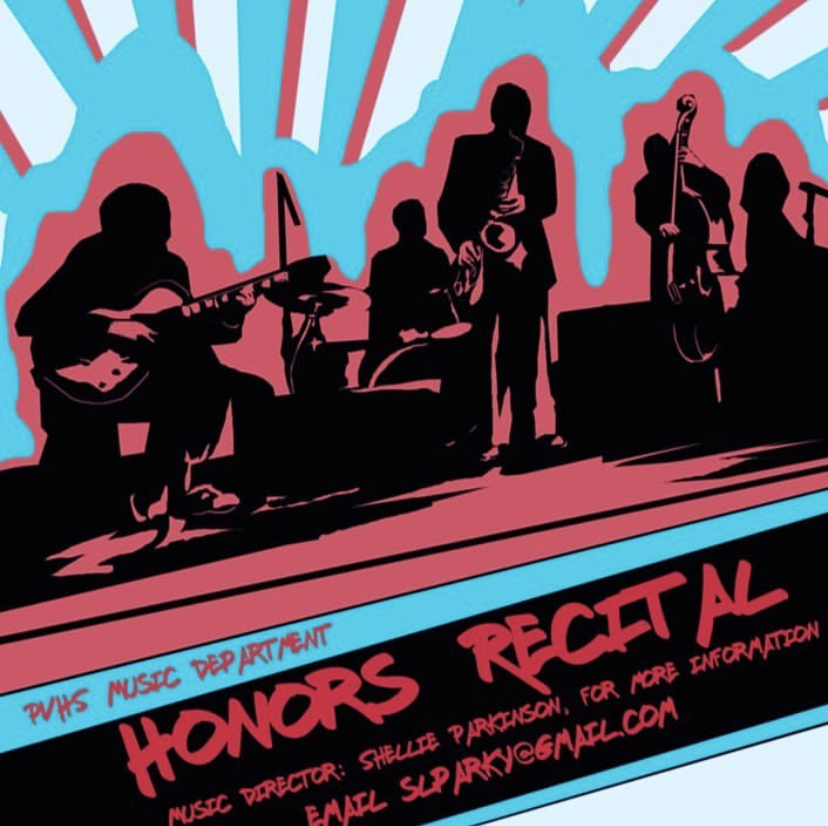
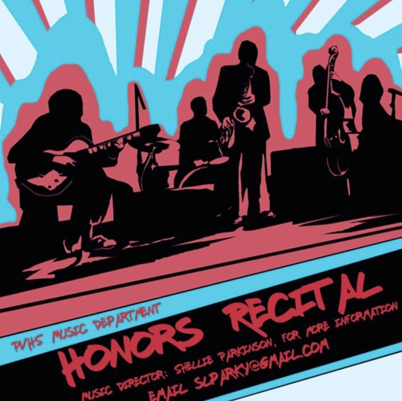
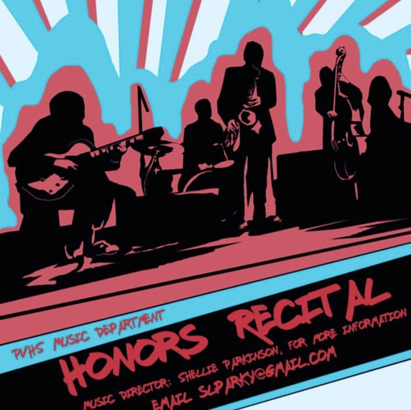

Tyler Brondial
Tyler Brondial is a former professional musician with experience as a Jazz and Pit Orchestra musician performing in mutiple musicals and concerts. He briefly attended Berklee College of Music before deciding to change career paths.
He currently attends the University of California Riverside and is studying Business Economics because he is interested in helping others manage and prepare their finances.
Outside of school he likes to spend his time cooking, learning new skills, and playing video games.
Experience
Musician
• Performed in 2019 professional production of "The Wizard of Oz" with the Palos Verdes Performing Arts Conservatory
• Worked with and Managed Jazz Band "Met the Man, Shook his Hand" from 2018 to 2020
• Experience in a marching band setting
• Willing to learn new instruments for a perfomance or production
Junior Manager
• Worked both front and back of house, cashier, cook, barista, prep, dishwasher, etc.
• Responsible for closing store while on shift.
• Responsible for teaching new hires about their jobs and making sure they are performing tasks successfully.
Music Department Lead
• Managed Department Website
• Head of Tri-M Music Honor Society
• Event Coordinator for campus music activities and events
• Taught and lead the school's Marching Band
• Helped conduct and decide auditions
Education
UC Riverside
Portfolio
 

